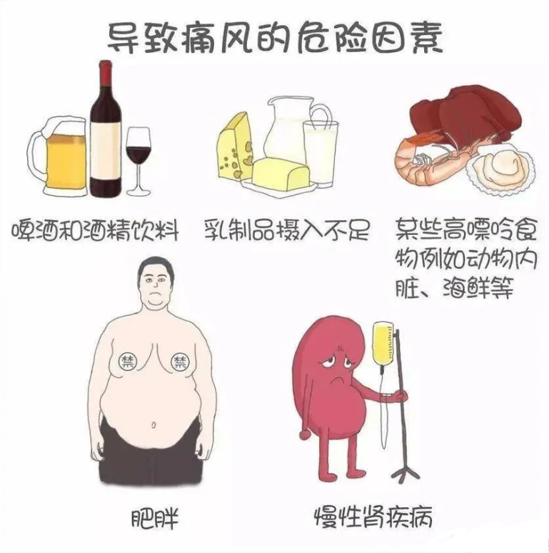

年后肝"负重"？百年春护肝美颜能量抗衰老针——给肝"松绑"，让脸发光！
2026-03-01

About Us
关于百年春
郭麒麟因痛风坐轮椅：痛风病有多可怕
郭麒麟，很多人对他都很熟悉和喜爱，经常能在各大综艺、影视剧中看到他的身影。而作为郭德纲的儿子，他也被大家称为“德云社少班主”。
他和德云社可以说是几乎一同成长。德云社成立于1995年，而郭麒麟96年出生，现在正值25岁青春年华。不过，就是这样看似健康、活力的年轻人，却被痛风所困扰。
郭麒麟的痛风发作，脚肿得厉害，疼得都睁不开眼睛。即使吃药缓解，当时效果也不是很好。
而这次出国，玩得太开心，熬夜、晚睡、顿顿大肉海鲜等。郭麒麟忘了自己的尿酸问题，后来的行程只能坐轮椅出行。
方清平已有十年痛风史
汪涵因痛风拒吃海鲜类食物
向佐患有痛风不能吃肉
回到房间内的向佐莫名开始吃药，开始观察室的嘉宾还只是诧异，随着向佐第二种、第三种、第四种药连续吃下去，连场外的刘涛都开始惊呼：这是要吃多少啊？没想到此时的向太却很“淡定”地解释：他有痛风。
痛风的原因及危害

干细胞为痛风患者“解忧”
自体干细胞治疗痛风的机理
相比传统疗法，干细胞治疗痛风的优势：
✔能有效提升机体的免疫功能，抑制核酸的氧化分解；
✔能有效抑制内源性嘌呤生成，降低尿酸指数；
✔避免患者由于长期服用药物的毒副作用对肝、肾等器官的影响，避免并发症的发生；
✔减少关节炎的发生，防止痛风石的形成；
✔调节并恢复身体各脏腑器官的功能，恢复整个系统正常功能，调节身体的代谢达到平衡。
自体干细胞疗法能降低尿酸指数，杜绝关节炎的发生，以防止痛风石的形成。从而有效避免痛风患者长期服用药物对肝、肾等器官产生的毒副作用，并有效避免病发症。
痛风不只是“痛”那么简单，一旦发作就要了半条命。得了痛风，就不要一忍再忍，正规治疗才是硬道理，早预防、早发现、早治疗。相信随着干细胞技术的飞速发展，很多传统医学顽疾将会得到有效的治疗，甚至是治愈！